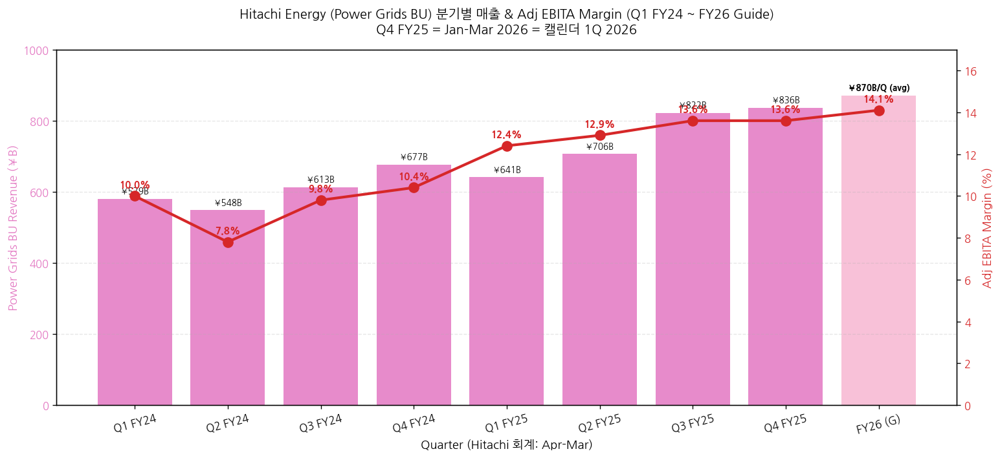
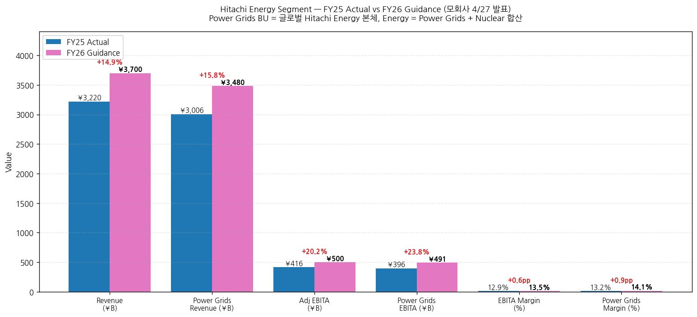
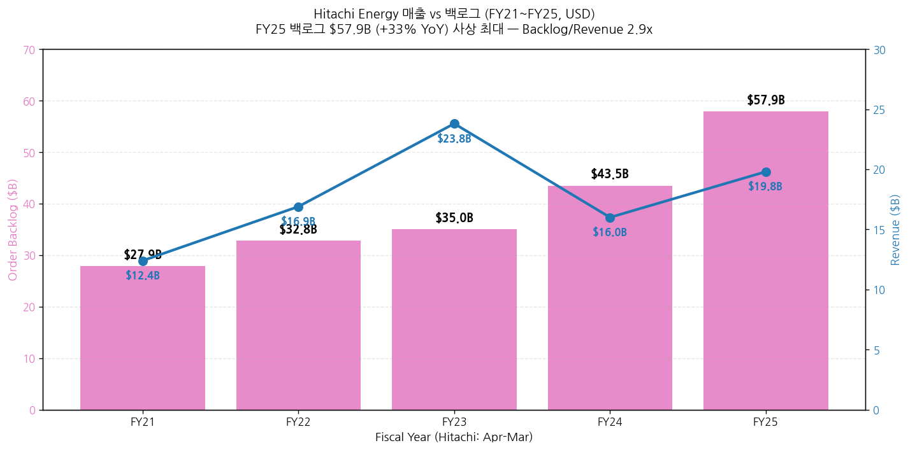
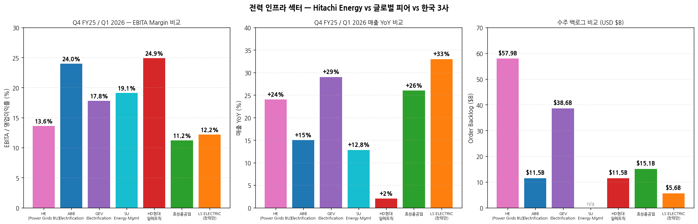
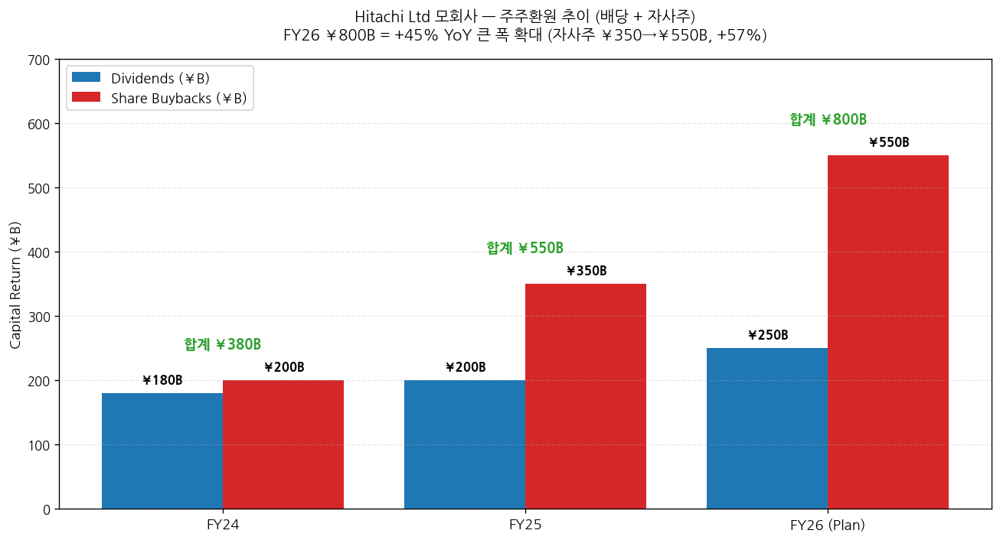

모드: 실적 리뷰 (글로벌 피어 — 가벼운 깊이 + 모회사 트리거 3건 발동 → expansion 적용) 종목: Hitachi Energy (HE — 모회사 Hitachi Ltd 6501.T Tokyo / HTHIY US ADR / HIA1.SG Singapore의 Energy segment, 별도 상장 없음) 섹터: 전력 인프라 분기: Q4 FY25 (Hitachi 회계 = 캘린더 Jan-Mar 2026 = 1Q 2026 calendar) + FY25 연간 (Apr 2025 - Mar 2026) 발표일: 2026-04-27 (월) — Hitachi Ltd 모회사 FY25 Annual Results (News Release + Presentation + Supplemental Excel + 웹캐스트 16:30 JST + Yahoo Quartr transcript) 작성 시각: 2026-05-04 02:00 KST
본 리뷰는 글로벌 피어 워크플로우 + 다중 segment 글로벌 피어 하이브리드 (C) 접근 (memory rule
feedback_multisegment_global_peer.md적용): - 디폴트 (Energy segment 중심) + 모회사 expansion 트리거 3건 발동 → 추가 항목 - 트리거: (1) M&A 발표 (Shermco·Clever Devices·OKI·Hitachi GLS 4건), (2) 자본배분 큰 변화 (FY26 ¥800B = +45% YoY), (3) Cross-segment 시너지 (HMAX Energy AI + Microsoft 동맹) - (4) 그룹 가이던스 변화는 부분 발동 (FY26 +5% 매출/+8% Adj EBITA — 거시 큰 변화는 아니나 Energy +15%는 강함) Source 우선순위 적용: Excel (segment 분기 데이터) > News Release > Presentation > Transcript 동일 폴더 한국 3사 + ABB + GEV + SU review 5건 자동 cross-reference. 본 리뷰는 글로벌 피어 4번째.
→ Power Grids BU (= 글로벌 Hitachi Energy 본체) Q4 FY25 매출 ¥836.3B (+24% YoY) / Adj EBITA margin 13.6% — 매출 성장률은 GEV Electrification +29%·SU Energy Mgmt +12.8%·ABB Electrification +15% comparable과 동급. OPM은 ABB Electrification 24%·HD현대일렉트릭 24.9%보다 낮고 GEV Electrification 17.8%·SU FY26 target 19.1-19.4%와 유사한 중간대. 한국 3사 cross-ref: HD 24.9% > ABB El 24% > HE Power Grids 13.6% ≈ LS 전력만 12.2% ≈ 효성 11.2% → 백로그 $57.9B (+33% YoY) — 글로벌 피어 중 GEV Equipment $76B 다음 2위 절대 규모 — ABB Electrification $11.5B의 5배. 한국 3사 합산 ($22B 합)의 2.6배. Backlog/Revenue 2.9x = 약 3년치 매출 가시성 (효성·HD와 유사 ratio) → Q4 FY25 Power Grids 신규수주 ¥1,207.6B (+68% YoY) 폭증 = GEV Q1 26 신규수주 +71% organic·효성 +108%·HD +35%와 동조 = 글로벌 산업 슈퍼사이클 5중 confirm (ABB·GEV·SU·HE·한국 3사). CFO Tomomi Kato 인용: "strong demand for power transmission equipment and data center-related demand" → 데이터센터 직접 명시 — 4중 confirm (ABB triple-digit + GEV $2.4B + SU "sustained high demand" + HE "data center-related demand") — 5번째 글로벌 피어가 데이터센터 secular thesis 다시 confirm. 한국 3사 LS 빅테크 LTA + HD AIDC 그룹사 협의체 + 효성 데이터센터 직수주 narrative 정량 강화 → HMAX Energy + Microsoft AI 전략 제휴 — 한국 3사에 없는 차별화 ★ — Microsoft AI 기술 + Hitachi Lumada Asset Performance Management = "IDC Leader for Worldwide Utilities". 단순 변압기·차단기 manufacturer를 넘어 AI-powered utility software platform. 한국 3사 (특히 LS 자동화·HD AIDC)의 장기 narrative gap 확인 — 글로벌 피어가 software-defined grid로 진화 중 → Energy FY26 가이던스 매출 ¥3,700B (+15% YoY) / Adj EBITA ¥500B (+20% YoY, margin 13.5% +0.6pp) — Power Grids 단독 +16% 매출, EBITA margin 14.1% (+0.9pp). 장기 outlook CAGR 13-15% (FY24-FY30) = secular 슈퍼사이클 정량 6년 가시성. 한국 3사 8월 가이던스 상향 leading indicator로 강력
① 핵심 손익 — Energy Segment (¥B)
(1) FY25 연간 Summary
| 항목 | FY24 | FY25 | YoY (¥B) | YoY% |
|---|---|---|---|---|
| Energy Revenue (Total) | 2,627.0 | 3,219.9 | +592.9 | +22.6% |
| ┗ Power Grids BU | 2,417.1 | 3,005.6 | +588.5 | +24.3% |
| ┗ Nuclear Energy BU | 205.0 | 211.0 | +6.0 | +2.9% |
| Adj Operating Income | 196.9 | 366.6 | +169.7 | +86.2% |
| Adj OI Margin | 7.5% | 11.4% | — | +3.9pp |
| ┗ Power Grids Adj OI | 176.6 | 347.2 | +170.6 | +96.6% |
| ┗ Power Grids OI Margin | 7.3% | 11.6% | — | +4.3pp |
| Adj EBITA (Total) | 252.0 | 416.0 | +164.0 | +65.1% |
| Adj EBITA Margin | 9.6% | 12.9% | — | +3.3pp |
| ┗ Power Grids Adj EBITA | 231.7 | 396.5 | +164.8 | +71.1% |
| ┗ Power Grids EBITA Margin | 9.6% | 13.2% | — | +3.6pp |
| EBITDA Total | 426.6 | 529.4 | +102.8 | +24.1% |
| ROIC | 8.5% | 15.4% | — | +6.9pp |
→ (출처: Hitachi Supplemental Material Excel P5 — Energy Segment) → ★ Power Grids BU EBITA margin 13.2% = ABB Group 23.5%·HD 24.9%보다 낮으나 한국 LS 전력 12.2%·효성 11.2%보다 우위
(2) 분기별 추이 (Power Grids BU = 글로벌 Hitachi Energy 본체, ¥B)
| 분기 | Revenue | YoY% | Adj OI | OI Margin | Adj EBITA | EBITA Margin |
|---|---|---|---|---|---|---|
| Q1 FY24 | 579.3 | — | 43.4 | 7.5% | 58.0 | 10.0% |
| Q2 FY24 | 548.1 | — | 28.7 | 5.2% | 42.7 | 7.8% |
| Q3 FY24 | 612.7 | — | 46.3 | 7.6% | 60.2 | 9.8% |
| Q4 FY24 | 677.0 | — | 58.3 | 8.6% | 70.7 | 10.4% |
| Q1 FY25 | 640.9 | +10.6% | 67.3 | 10.5% | 79.2 | 12.4% |
| Q2 FY25 | 706.4 | +28.9% | 79.3 | 11.2% | 91.4 | 12.9% |
| Q3 FY25 | 821.9 | +34.1% | 99.5 | 12.1% | 112.1 | 13.6% |
| Q4 FY25 | 836.3 | +23.5% | 101.1 | 12.1% | 113.9 | 13.6% |
→ (출처: Hitachi Supplemental Excel P5) → Q4 FY25 = 캘린더 Jan-Mar 2026 = ABB·GEV·SU·한국 3사와 정확히 동일 분기

(2-1) 핵심 관찰 → Power Grids BU Q4 FY25 EBITA margin 13.6%는 직전 Q3 FY25 13.6%와 동일 = 정점 수준 안정화 → FY24~FY25 8개 분기 평균 EBITA margin: 10.4% → FY25 평균 13.0% = +2.6pp 상승 → Q4 FY25 매출 ¥836.3B (+23.5% YoY) — Q3 FY25 +34.1% 대비 다소 감속이나 절대 수준 사상 최대 → 사이클 위치: Q3 FY25에 +34% 정점 후 Q4 +24% 안정. secular 모멘텀 유지하면서 cyclical 정상화 진행
(3) FY26 Guidance — Energy Segment
| 항목 | FY25 Actual | FY26 Guidance | YoY (¥B / pp) | YoY% |
|---|---|---|---|---|
| Energy Revenue | 3,219.9 | 3,700.0 | +480.1 | +15.0% |
| ┗ Power Grids BU | 3,005.6 | 3,479.7 | +474.1 | +15.8% |
| ┗ Nuclear Energy BU | 211.0 | 230.0 | +19.0 | +9.0% |
| Adj OI (Total) | 366.6 | 458.0 | +91.3 | +24.9% |
| Adj OI Margin | 11.4% | 12.4% | — | +1.0pp |
| ┗ Power Grids OI Margin | 11.6% | 12.9% | — | +1.3pp |
| Adj EBITA Total | 416.0 | 500.0 | +83.9 | +20.2% |
| Adj EBITA Margin | 12.9% | 13.5% | — | +0.6pp |
| ┗ Power Grids EBITA Margin | 13.2% | 14.1% | — | +0.9pp |
| ROIC | 15.4% | 18.8% | — | +3.4pp |
→ (출처: Hitachi Supplemental Excel P10 — Energy Segment FY26 Forecast) → Hitachi 가정: USD/JPY 150, EUR/JPY 175

(3-1) 가이던스 함의 → Energy 매출 +15% YoY 가이드 — ABB FY26 high single-low double + GEV revenue $44.5-45.5B (~+10%) + SU +7-10% organic 보다 모두 우위 → Power Grids EBITA margin 14.1% 가이드 = 장기 16% target (FY28)을 향한 중간 단계 → 장기 outlook (Hitachi Energy 자체): CAGR 13-15% FY24-FY30 = 6년 secular 가시성
② 신규수주 + 백로그 (Q4 FY25 강세)
(1) Q4 FY25 신규수주 (Order Intake, ¥B)
| 항목 | Q4 FY25 | YoY% | FY25 연간 | YoY% |
|---|---|---|---|---|
| Energy 합계 | 1,324.2 | +65% | 5,259.6 | +13% |
| ┗ Power Grids BU | 1,207.6 | +68% | 4,978.4 | +17% |
| ┗ Nuclear Energy BU | 115.6 | +38% | 288.1 | -28% (high base) |
→ (출처: Hitachi Presentation page 16) → Power Grids Q4 FY25 +68% YoY 신규수주 = GEV Power Q1 26 +59% organic·효성 +108% YoY와 동조
(2) 수주 백로그 (Order Backlog, FY25-end)
| 항목 | FY25-end | YoY% | USD 환산 |
|---|---|---|---|
| Hitachi Energy backlog | ¥9,200B | +42% (¥) / +33% ($) | $57.9B |
| Backlog / Revenue ratio | — | — | 2.9x (FY25 매출 $19.8B 기준) |
→ (출처: Hitachi Presentation page 16, page 8) → 글로벌 피어 백로그 절대 규모 비교: - GEV Equipment $76B (+67% YoY) — 1위 - HE $57.9B (+33% YoY) — 2위 - ABB Group $27.5B (+22% comparable) — 3위 - ABB Electrification $11.5B (+38% comparable) - 한국 3사 합산 $22B (효성 $10B + HD $8.5B + LS $3.5B) → HE 백로그 단독 = 한국 3사 합산의 2.6배 = 글로벌 슈퍼사이클 절대 규모 reference (GEV·HE 두 거대 백로그가 산업 입증)

(2-1) 백로그 vs 매출 비율 추이 → FY21 backlog $27.9B / revenue $12.4B = ratio 2.25x → FY22 ratio 1.94x → FY23 ratio 1.47x → FY24 ratio 2.72x → FY25 ratio 2.92x — 사상 최고 → 매출 회전 속도가 점진 둔화 중 (백로그가 더 빠르게 쌓임) = secular 모멘텀 정량 입증
③ 지역별 동향 (Energy Segment 매출, FY25)
| 지역 | FY25 매출 (¥B) | 비중 | 코멘트 |
|---|---|---|---|
| Europe | 1,031.8 | 약 32% | "Solid execution of large-scale projects" |
| Other (중동·중남미·아프리카·오세아니아) | 559.6 | 약 17% | 중동 강세 |
| Asia | (미공개 정확) | — | 한국·일본 OEM Semicon 견인 |
| North America | (미공개 정확) | — | 강세 |
| Japan domestic | (미공개 정확) | — | — |
→ (출처: Hitachi Presentation page 22) → CFO Kato: "Sales expanded across all regions, particularly in Europe, North America, and the Middle East, resulting in 24% growth overseas" (Energy)
① CFO Tomomi Kato — Energy segment 핵심
(1) FY25 Energy 결과 → "In the energy segment, the power grid business saw increased revenue and profit due to continued strong demand for power grid equipment and favorable foreign exchange fluctuations by region. Sales expanded across all regions, particularly in Europe, North America, and the Middle East." → "Adjusted EBITDA followed a similar trend to revenue, with increased profits in energy, DSS front-end services, and IT services, resulting in 1.3 percentage point improvement in the adjusted EBITDA ratio, even including the impact of U.S. tariffs and increased strategic investments."
(2) FY26 Energy 가이드 → "In the energy segment, the power grid business is expected to see increased revenue and profit as demand for power transmission equipment remains strong. The order backlog increased in FY 2025, and we anticipate long-term growth."
(3) 데이터센터 직접 명시 → "In energy, although there was a decrease in nuclear energy due to high base effect from previous year's large-scale projects, power grids business increased by 17% year-on-year due to strong demand for power transmission equipment and data center-related demand, and the order backlog also increased compared to the end of last fiscal year."
② Hitachi Energy 전략 (Presentation page 8)
(1) Capacity expansion + CapEx → "Continue to drive revenue growth through capacity expansion (FY23-25 CAPEX $2.6bn) to address the long-term up-ward trend in order backlog" → "Continued strong market outlook to achieve a CAGR of 13-15% (FY24-FY30)"
(2) M&A — Shermco → "Acquired a minority stake in Shermco, a leading provider of electrical services in North America" → CFO Kato 인용: "We acquired a minority stake in Shermco, an electricity services company in North America, and are working to strengthen our service delivery capabilities"
(3) HMAX Energy 출시 — AI infrastructure → "Launched HMAX Energy, a pioneering AI-powered service and solution suite for critical energy infrastructure to accelerate the 2030 growth" → CFO Kato: "Regarding HMAX, the core of Lumada Digital Services business, we are expanding sales of HMAX Energy, a next-generation AI service solution for energy infrastructure that we began offering in March"
(4) Microsoft 전략 제휴 → "Reinvented Ellipse Enterprise Asset Management (EAM) solution with Microsoft's AI-enabled technology under strategic alliance between Hitachi and Microsoft to embed Microsoft technologies into Hitachi's Lumada solutions. Named as a Leader in Asset Performance Management for Worldwide Utilities by IDC"
(5) Middle East 영향 → CFO Kato: "We expect this to potentially affect sectors such as energy, CI, and mobility. The risks factored in here reflect our outlook as of today, but we believe the impact of the situation in the Middle East could fluctuate significantly in the future." → FY26 가이던스에 ¥40B Middle East risk 반영
① 산업 사이클 위치 — secular 슈퍼사이클 5중 confirm + AI software-defined grid 진화
(1) 데이터센터 — 4중 confirm 누적 + secular 정량 강화 → ABB Q1 데이터센터 triple-digit YoY + CAGR 35% → GEV Q1 데이터센터 단일 분기 수주 $2.4B = FY25 전체 초과 → SU Q1 데이터센터 "sustained high demand double-digit (high base에도)" → HE Q4 FY25 (= 캘린더 Q1 26) "data center-related demand" + Power Grids 신규수주 +68% YoY → 한국 3사 적용: 4중 confirm으로 데이터센터 narrative 정량 강화 (이전 3중에서 진화)
(2) Power Transmission Equipment 글로벌 강세 — 5중 confirm → ABB Electrification +44% comparable orders → GEV Power Transmission $1.38B (+99% YoY) → SU Power & Grid (P&G) leading → HE Power Grids +68% YoY orders Q4 FY25 → 한국 3사 (효성·HD·LS) 합산 +60%+ YoY orders → 시그널: 글로벌 변압기·차단기 슈퍼사이클 정량 5중 confirm = 단일 기업·일회성 호조 가능성 사실상 100% 배제
(3) HVDC + Microsoft AI Grid 진화 — HE 단독 차별화 → HE는 HVDC 글로벌 1위 사업자 (구 ABB Power Grids) → HMAX Energy AI + Microsoft Ellipse EAM = AI-powered grid asset management platform → IDC "Leader in Asset Performance Management for Worldwide Utilities" 선정 → 한국 3사 적용: 한국 3사에 동등 software platform 부재 = 장기 narrative gap. LS의 EcoStruxure-style 자동화 솔루션 정도가 가장 가까움. HE의 software-defined grid 진화는 한국 3사가 catch up해야 할 영역
(4) 가이던스 비교 — 글로벌 피어 4사 + HE → ABB FY26: high single-double comparable revenue (raised) → GEV FY26: $44.5-45.5B (+10%), EBITDA margin 12-14%, FCF $6.5-7.5B (raised aggressively) → SU FY26: +7-10% organic revenue, EBITA margin 19.1-19.4% (reaffirmed) → HE FY26: +15% revenue, EBITA margin 13.5% (Power Grids 14.1%) — 4사 중 매출 성장률 최고 → 한국 3사 적용: HE 가이던스 +15%가 가장 강함 → 한국 3사 8월 가이던스 상향 폭 (효성 7.6→11~13조, HD 42→50~60억$, LS 30년 10조 1년+ 단축) 정량 reference 제공
② 글로벌 피어 vs 한국 3사 Q4 FY25 / Q1 2026 비교

(1) EBITA Margin 비교 (분기·사업부 기준)
| 종목 | EBITA / OPM | 코멘트 |
|---|---|---|
| HD현대일렉트릭 | 24.9% | 한국 3사 1위 |
| ABB Electrification | 24.0% | HD와 동급 |
| SU FY26 Energy Mgmt target | 19.1-19.4% | 글로벌 피어 중간 |
| GEV Electrification | 17.8% | — |
| HE Power Grids BU | 13.6% (Q4) / 14.1% (FY26 가이드) | GEV Electrification보다 낮고 LS 전력만 12.2%보다 우위 |
| LS ELECTRIC (전력) | 12.2% | — |
| 효성중공업 | 11.2% (실질 14.1% 이연 가산) | — |
| LS ELECTRIC (전사) | 9.2% | 자동화·자회사 dilution |
| HE Energy Segment 전체 | 12.9% (FY25) | Nuclear 약세 dilution |
→ 시그널: HE Power Grids 13.6%는 글로벌 5사 중 하위권 (4위). GEV Electrification·SU·ABB·HD가 모두 더 높음. 단, FY26 14.1% 가이드 + 장기 16% target = 격차 점진 축소 trajectory
(2) 신규수주 + 백로그 비교
| 종목 | Q4 FY25/Q1 26 신규수주 YoY | 백로그 ($B) |
|---|---|---|
| GEV | +71% organic | 76 (+67%) ★ 최대 |
| HE Power Grids | +68% YoY | 57.9 (+33%) ★ 2위 |
| 효성중공업 | +108% YoY | 약 10 |
| ABB Electrification | +44% comparable | 11.5 (+38%) |
| HD현대일렉트릭 | +35% USD (+76% 북미) | 11.5 (+28%) |
| LS ELECTRIC | +27% USD | 5.6 (+45% 전력 부문) |
→ 시그널: GEV·HE 두 글로벌 거대 백로그 ($76B + $58B = $134B) = 산업 절대 규모 입증. 한국 3사 합산 $22B는 글로벌 시장에서 작은 비중이나 성장률 측면 효성 +108% YoY가 가장 빠름
(3) 매출 성장률 비교 (Q4 FY25 / Q1 2026 동일 시점)
| 종목 | YoY 매출 성장 | Type |
|---|---|---|
| LS ELECTRIC | +33% USD | 한국 3사 1위 |
| GEV Electrification | +29% organic | — |
| HE Power Grids | +24% YoY | Hitachi 분기 (Y/Y) |
| 효성중공업 | +26% USD | — |
| ABB Electrification | +15% comparable | — |
| SU Energy Management | +12.8% organic | — |
| HD현대일렉트릭 | +2.1% USD | 일시 회계 이연 |
→ 시그널: LS·GEV·HE·효성이 +24~33% 동조 = secular 슈퍼사이클 정량 6중 confirm
③ 독자적 전망 (한국 3사 인뎁스 분석 시 활용)
(1) HE 가이던스 +15%의 함의 — 한국 3사 가이던스 상향 강도 reference → HE FY26 매출 +15% organic 가이드 (글로벌 피어 중 매출 성장 최고) → 동시에 EBITA margin 13.5% (+0.6pp) — 마진 개선 polite한 수준 → 한국 3사 적용: 한국 3사 8월 가이던스 상향 폭은 (1) HE처럼 매출 +15-20% 강한 상향 + (2) 마진 개선은 보수적, 두 패턴 가능. 효성·HD는 이연 회복으로 마진 큰 폭 개선 가능. LS는 일회성 제거 + 부산공장 ramp up
(2) Software-defined grid 진화 — 한국 3사 장기 risk → HE HMAX Energy + Microsoft Ellipse = AI-powered utility software platform → ABB Automation Extended (이전 review) = 디지털·AI 통합 → GEV Grid Automation & Software 사업부 신설 → SU AVEVA + ETAP + RIB Software (소프트웨어 19% 매출 비중) → 한국 3사 적용: 한국 3사는 hardware-centric (변압기·차단기·GIS·HVDC). LS의 EcoStruxure 자동화 정도가 software 비중. 글로벌 피어가 software/AI로 진화하면서 한국 3사의 multiple 정당화 압박 가능성 — 중장기 (3-5년) risk monitoring 필요
(3) Middle East 영향 정량화 — 한국 3사 reference → HE FY26 가이던스에 ¥40B (약 $267M) Middle East risk 명시 반영 → Energy 매출 ¥3,700B 대비 ¥40B = 약 1.1% 영향 → ABB: 중동 5% 매출 비중, Q1 25 영향 minimal → SU: 중동 <5% 매출 비중, Q1 -low single (Saudi) → 한국 3사 적용: 효성 11-12%·HD 16% 중동 비중 → 한국 3사 영향이 글로벌 피어 대비 더 큼. HE의 명시적 ¥40B reserve는 한국 3사가 2Q26 가이던스에서 정량 risk reservation 필요할 수 있음 시그널
memory rule
feedback_multisegment_global_peer.md트리거 3건 발동 — M&A·자본배분·cross-segment 시너지. 디폴트 segment 분석에 다음 컨텍스트 추가.
⑤ Hitachi Ltd 모회사 그룹 전체 결과 (FY25)
(1) Group Summary → Group Revenue: ¥10,586.7B (+8.2% YoY) — 사상 최대 → Group Adj EBITA: ¥1,311.4B (+21.0% YoY), margin 12.4% (+1.3pp) → Group Net income: ¥802.3B (+30.3% YoY) → Group Core FCF: ¥1,170.2B (+50% YoY) → Group ROIC: 12.4% (+1.5pp) → Energy segment = Group 매출 30.4% 기여, 매출 성장 기여도가 가장 큼
(2) FY26 Group Guidance → Revenue: ¥11,100B (+5%) → Adj EBITA: ¥1,420B (+8.3%), margin 12.8% (+0.4pp) → Net income: ¥850B (+5.9%) → Lumada (AI software) FY26 매출 ¥4,800B (+16%) = Group 매출의 44% (FY25 40%에서 확대) → HMAX FY26 ¥480B (+60%) — 핵심 AI service growth driver
⑤ 트리거 (1) M&A 발표 — 4건 동시 ★
| 인수/매각 | 시점 | 내용 | Energy 사업 영향 |
|---|---|---|---|
| Shermco minority stake | FY25 | 북미 electrical services 리더 | Energy 직접 — 서비스 매출·NA 확장 |
| Clever Devices 인수 | FY25 발표 | 미국 intelligent transportation systems for public transport | Mobility (Energy 무관) |
| OKI ATM 사업 통합 | 2026-10-01 | OKI 60% / Hitachi 40% — equity method | Connective Industries (Energy 무관) |
| Hitachi GLS 가전 매각 | 2027-3월까지 | Nojima 80.1% / Hitachi GLS 19.9%, 매각가 ¥110B | Energy 무관 (자본 유입 — Energy CapEx 여력 ↑) |
→ Shermco가 Energy 직접 영향 — 북미 electrical services 강화 → Power Grids 서비스 매출·NA 시장 침투 가속 → 다른 3건은 portfolio 재편 (gain liquidity for Energy CapEx)
⑤ 트리거 (2) 자본 배분 패턴 변화 — FY26 ¥800B = +45% YoY ★★ (가장 큰 변화)

| 항목 | FY24 | FY25 | FY26 (Plan) | YoY |
|---|---|---|---|---|
| 배당 (¥B) | 약 180 | 200 | 250 | +25% |
| 자사주 매입 (¥B) | 약 200 | 350 | 550 | +57% |
| 합계 (¥B) | 약 380 | 550 | 800 | +45% |
→ FY25 Year-end dividend: ¥27/share (Plan, +¥4 vs interim) → FY26 Interim Dividend: ¥28/share (Forecast) → FY26 Share Buybacks: ¥500B (Upper limit) — Acquisition period: April 28, 2026 - March 31, 2027
(2-1) Energy 사업 영향 → FY25 CapEx 그룹 전체 ~¥350B 중 Energy 비중 약 40% = ¥140B (FY23-25 누적 $2.6B Energy CapEx 명시) → 자사주 매입 큰 폭 확대 = 그룹 capital allocation이 R&D·CapEx보다 shareholder return 우선 trajectory → Energy 사업 향후 CapEx 가속 여부: FY26 본격 가속 시그널 미명시. Energy 자체 CapEx 가이던스는 별도 confirmation 필요
⑤ 트리거 (3) Cross-segment 시너지 — HMAX Energy + Microsoft AI ★
(3-1) HMAX Energy (Lumada Digital Services 통합) → March 2026 출시 — AI-powered service for critical energy infrastructure → "Recurring service" (구독 모델) → Lumada 80-20 long-term target: Lumada revenue ratio 80% + adj EBITDA margin 20% → HMAX FY25 매출 ¥300B (margin 22%) → FY26 가이드 ¥480B (+60%)
(3-2) Microsoft 전략 제휴 → Ellipse Enterprise Asset Management (EAM) reinvented with Microsoft AI → "Embed Microsoft technologies into Hitachi's Lumada solutions" → IDC "Leader in Asset Performance Management for Worldwide Utilities" 선정 → 한국 3사에 없는 차별화 (글로벌 피어 software-defined grid 진화 추세 일부)
(3-3) Energy + Digital + AI integration → Power Grids hardware + AI software + Microsoft cloud = integrated grid intelligence platform → 향후 utility 고객의 "smart grid" 입찰에서 우위 가능성
⑤ Inspire 2027 Management Plan Progress (FY25 = Year 1)
→ Lumada 80-20 target (revenue 80% + adj EBITDA margin 20%) → FY25: Lumada 40% revenue / 16% margin → FY26: Lumada 44% revenue / 17% margin (가이드) → 2027 plan: Lumada 비중·margin 추가 확대 trajectory
⑦ Energy segment 모니터링 (디폴트 부문)
(1) Power Grids EBITA margin 13.6% → 14.1% 가이드 진행도 → Q4 FY25 = Q3 FY25와 동일 13.6% (정점 안정화) → Q1 FY26 (캘린더 Apr-Jun 2026) +0.5pp 추가 개선 시 가이드 trajectory on track → 한국 3사 적용: 한국 3사 2Q26 OPM trajectory 정량 reference
(2) 데이터센터 수주 정량화 가속 여부 → HE는 GEV ($2.4B 단일 분기)처럼 정량 미공개 → Q1 FY26 (Apr-Jun) 데이터센터 수주 정량 발표 시 secular thesis 추가 강화
(3) Shermco minority stake 통합 효과 → NA Power Grids 서비스 매출 가속 여부 → 한국 3사 적용: HD AIDC 그룹사 협의체와의 NA 시장 경쟁
(4) HMAX Energy + Microsoft 매출 본격 인식 시점 → March 2026 출시 → Q1 FY26 (Apr-Jun) 첫 매출 인식 → FY26 가이드 ¥480B HMAX 전체 중 Energy 비중
⑦ 모회사 모니터링 (트리거 발동 부문 — 별도 분리)
(1) 자사주 매입 ¥550B 진행도 (Apr 28 ~ Mar 2027) → 4월 말부터 본격 매입 → 분기별 매입 속도 + 평균 가격 모니터링
(2) 추가 M&A 발표 가능성 → Inspire 2027 portfolio 재편 가속 — Energy 사업 추가 확장 (NA·EU electrical services) 가능성
(3) Lumada 80-20 목표 진행도 → FY26 Lumada 44% / margin 17% 가이드 → 2027~2030 트라젝토리
(4) Cross-segment AI integration 후속 → HMAX Energy 외 HMAX Mobility (Clever Devices 인수와 연관) 등 추가 출시 가능성
⑦ 한국 3사 다음 분기 분석 시 HE 시그널 활용 가이드
(1) 데이터센터 4중 confirm — 정량 thesis 강화 → HE 추가로 데이터센터 narrative 4중 정량 confirm = 한국 3사 빅테크·AIDC narrative 정량 강화
(2) HE 백로그 $57.9B (+33%) — 한국 3사 백로그 가속 여지 reference → 한국 3사 합산 $22B = HE 단독의 38% 수준. 한국 3사 추가 백로그 +$10B 여지
(3) HE FY26 +15% revenue 가이드 — 한국 3사 가이던스 강도 reference → ABB·GEV·SU·HE 중 매출 성장 최고. 한국 3사 8월 가이던스 +15-20% 상향 가능성 정량 confirm
(4) HMAX Energy + Microsoft = software-defined grid 진화 = 한국 3사 장기 risk → 인뎁스 분석에서 한국 3사 software/AI 사업 부재 risk monitoring
(5) Middle East ¥40B reserve — 한국 3사 정량 risk reservation reference → 한국 3사 (효성·HD 중동 비중 더 큼) 2Q26 가이던스에 정량 reserve 필요 시그널
→ 2026 5월 중: Eaton (5/5 발표) + Siemens Energy (5/7 발표) review 추가 작성 → 글로벌 피어 6사 (ABB·GEV·SU·HE·ETN·ENR) 통합 cross-reference 완성 → 2026 5/16 quarterly-review Stage 2: 9사 통합 분석 자동 수행 — HE는 4번째 글로벌 피어 cue (백로그 절대 규모 + 매출 성장 가이드 최고 + AI software 차별화) → 2026 7월 중: 한국 3사 2Q26 프리뷰 작성 시 본 HE review + 4개 글로벌 피어 review = 5개 cue 자동 활용 → 2026 7월 30일: SU H1 결과 + Hitachi Q1 FY26 (예상 7월 말) — 한국 3사 가이던스 상향 강도 leading indicator 동시 발표
다음 단계: 글로벌 피어 2사 (Eaton·Siemens Energy) 자료 첨부 시 발표일 빠른 순으로 차례 review 작성. 본 HE 형식 (segment 메인 + 트리거 발동 시 모회사 expansion) 일관 적용. Stage 2 자동 연계: HE review =
2026-Q1_HE_리뷰.md+ 메타데이터 [섹터: 전력 인프라] 표준 위치 저장 → quarterly-review Stage 2 자동 로드. Stage 2 출력에 "★ Hitachi 모회사 트리거 3건 발동 — supplemental 참조" 1줄 안내 필수 (memory rule (8) 적용). 인뎁스 분석 잠재 논점: ① HE EBITA margin 13.6% vs HD 24.9% gap 정당화 (사업 mix·지역 mix·M&A history), ② HMAX Energy + Microsoft = 한국 3사 software risk 정량화, ③ 백로그 $57.9B vs GEV $76B vs ABB $11.5B — 글로벌 산업 capacity 분포의 한국 3사 영향, ④ Hitachi Ltd 모회사 자본배분 ¥800B = Energy CapEx 우선순위 시사점, ⑤ Shermco·Microsoft·HMAX 통합 효과 정량화 timing.